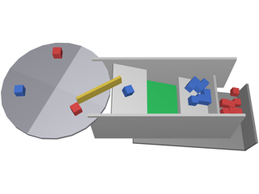

Running a PHX scene as a block of a Simulink model
PHX joins Simulink as one co-simulation block, not as a palette of physical primitives.
The scene is built in MATLAB exactly as in the rest of this guide; the
PHX Model block loads it, steps its
phx.Simulation once per sample time and exchanges signals with
the rest of the model. Both blocks of the toolbox are in the library
PhxLibrary, which appears in the Simulink Library Browser as PHX Toolbox.
The block's Source is either a scene script (a function that builds the scene and returns its bodies) or a MAT file with a saved scene, see Saving and loading scenes. A script runs again at the start of every simulation; a MAT file only loads, which is faster and lets the block check the port references while you edit the mask.
Ports address objects by their Name, so give every object you
want to connect a unique name:
function bodies = model_pendulum ax = cla(clf); view(3); axis equal; grid on; camlight headlight; anchor = phx.Body(ax, "Type", "static", "Name", "Anchor"); bob = phx.Body(ax, "Position", [1 0 0], "Name", "Bob"); phx.RevoluteJoint(anchor, bob, "PointB", [-1 0 0], "AxisA", [0 1 0]); phx.Thruster(bob, "Direction", [0 0 1], "MaxThrust", 5e3, "Name", "Drive"); bodies = [anchor bob]; end
Each port is bound to one public property of a named object, written as
Name.Property or, for part of it,
Name.Property(indices). The signal width follows from the property,
so Bob.Position is a 3-element signal and
Bob.Position(3) a scalar. The Edit ports… button of
the mask lists the objects of the scene and their properties to pick from.
Throttle of a thruster,
the TargetVelocity of a joint motor.Position, LinearVelocity,
TotalForce, the Angle of a joint.Methods such as applyForce cannot be ports. Drive the scene
through properties, or call methods from a PHX Action block, see below.
The block has a discrete sample time, the Simulation step, and each sample advances the scene by one engine step of that length. Keep it at about 5 ms or less when the scene has joints or stacked contacts, as in MATLAB. A controller that should run slower than the scene does not need a longer block step: give it its own sample time and let Simulink handle the rates, with a Rate Transition block where needed.
The block runs with any Simulink solver; the shipped examples use a fixed-step discrete solver with a fixed step that divides the block's sample time. A continuous part of the model, a plant model or a filter, can use a continuous solver, and the PHX block still steps only at its own samples.
At every sample the block first reports the outputs, the state of the scene at the current time t, and then writes the inputs and steps the scene from t to t + dt. An input therefore shows up on the outputs one sample later, as with a Unit Delay. In return the block is not a direct feedthrough, so a controller can be wired straight from its outputs back to its inputs without an algebraic loop. Do not add a Memory or Unit Delay block to the loop; it would add a second sample of delay.
With Show viewer on, the scene is drawn in a phx.extra.Viewer
while the model runs. Redraw steps sets how often it is redrawn: every N-th sample, as the
redrawStep argument of step does in MATLAB.
A redraw costs more than a physics step, so with a step of a millisecond redraw every 20th sample or
so. Setting Camera resolution to [H W] adds an output port
with the rendered view as an H-by-W-by-3
uint8 image, a synthetic camera for vision-in-the-loop models. The
image is current at every sample whatever the Redraw steps, and each frame costs a render, so sample
such a loop coarsely.
The PHX Action block runs your MATLAB code against the scene of a PHX
Model block on every rising edge of its trigger input. Use it for events and structural changes:
adding or removing bodies, calling methods, anything a property port cannot express. The code sees
the simulation as sim, the time as t,
its data inputs and a state struct kept between triggers, and it
assigns the data outputs.

phxex_sim_sorter: a rendered camera image tells the parts apart by colour,
a trapdoor sorts them, and a PHX Action block feeds new parts onto the carousel.phxex_sim_stand — open loop: a buggy on four shaker stands,
each driven by its own sine wave.phxex_sim_ballplate2 — closed loop: tilting a bowl steers
the centroid of two balls along a reference path.phxex_sim_sorter — vision in the loop and a PHX Action
block.phxex_sim_swingover — a scheduled trolley path swings a
load over a wall.Their scenes are built by the model_*.m scripts in
examples and saved to the saved_*.mat
files the blocks load.